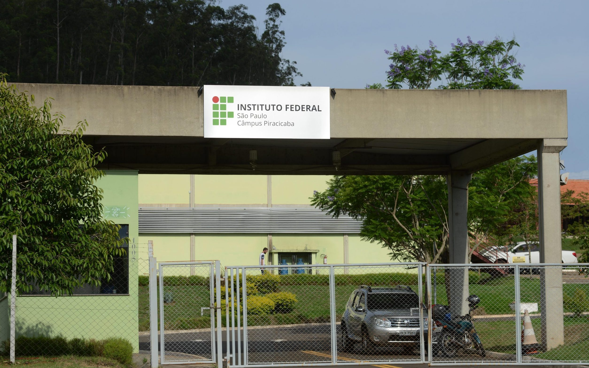
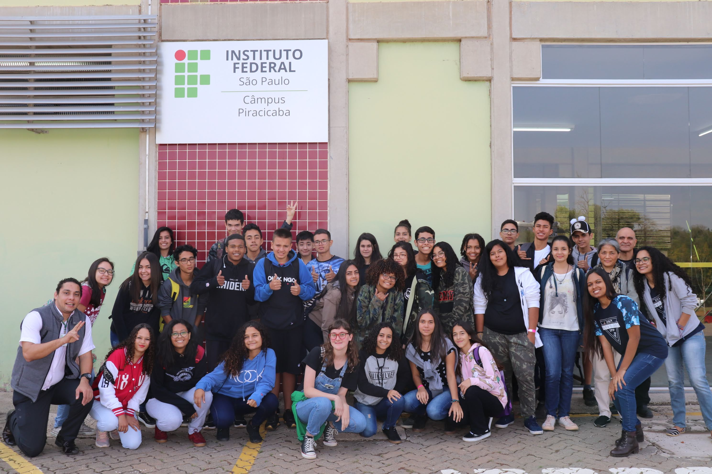

2016
O começo
As primeiras edições do Sarau acontecem no Campus Piracicaba, trazendo para dentro da escola apresentações e diferentes formas de expressão.

Um espaço para compartilhar aquilo que merece ser visto, ouvido e vivido.
Um sarau é um encontro onde pessoas compartilham diferentes formas de expressão.
Pode ser uma música, um poema, uma dança, uma cena, uma leitura ou qualquer outra coisa que alguém queira apresentar. O importante não é se encaixar em uma categoria, mas ter algo para compartilhar.
No IFSP — Campus Piracicaba, o Sarau transforma esse encontro em um momento para estudantes ocuparem o espaço da escola de uma maneira diferente.

A escola é feita de aulas, trabalhos, provas e projetos. Mas também é feita pelas pessoas que passam por ela todos os dias.
Cada estudante carrega interesses, talentos, histórias e ideias que nem sempre encontram espaço para aparecer durante a rotina escolar.
O Sarau existe para abrir esse espaço. É uma oportunidade de sair por alguns instantes da rotina e permitir que aquilo que cada pessoa sabe fazer também faça parte da escola.
A história do Sarau no Campus Piracicaba remonta a 2016, mantendo ao longo dos anos uma ideia simples: criar um espaço para que estudantes possam mostrar e compartilhar aquilo que sabem fazer.
De uma edição para outra, pessoas diferentes ocupam o espaço, novas apresentações aparecem e o encontro ganha novas formas. A ideia, porém, continua sendo a mesma: dar espaço à expressão.
As primeiras edições do Sarau acontecem no Campus Piracicaba, trazendo para dentro da escola apresentações e diferentes formas de expressão.
Novas turmas, novas pessoas e novas apresentações passam pelo evento, mantendo o propósito de compartilhar talentos e experiências.
O Segundo Ano de Informática prepara uma nova edição do Sarau, trazendo novamente a arte e a criatividade para o espaço da escola.

A edição de 2026 está sendo construída pelo Segundo Ano de Informática do IFSP — Campus Piracicaba.
Por trás das apresentações existe todo um trabalho de organização: pensar a identidade do evento, preparar a divulgação, organizar as inscrições, construir o site, planejar a programação e preparar o espaço para receber o público.
Conheça a nossa turma →
A edição de 2026 também ganhou uma identidade visual inspirada no universo de Tim Burton: personagens incomuns, cenários marcantes, fantasia e uma maneira diferente de enxergar aquilo que parece familiar.
É uma inspiração para sair do comum sem perder a essência do Sarau: dar espaço para aquilo que torna cada pessoa diferente.
Explorar Universo Burton →Av. Diácono Jair de Oliveira, 1005 — Santa Rosa Ipes, Piracicaba — SP, 13414-155.
Av. Diácono Jair de Oliveira, 1005
Santa Rosa Ipes
Piracicaba — SP
13414-155
Uma música. Um poema. Uma dança. Uma história. Uma ideia.
O Sarau existe justamente para dar espaço a essas coisas.
Fazer inscrição →